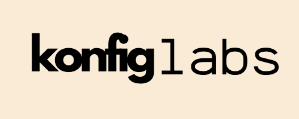
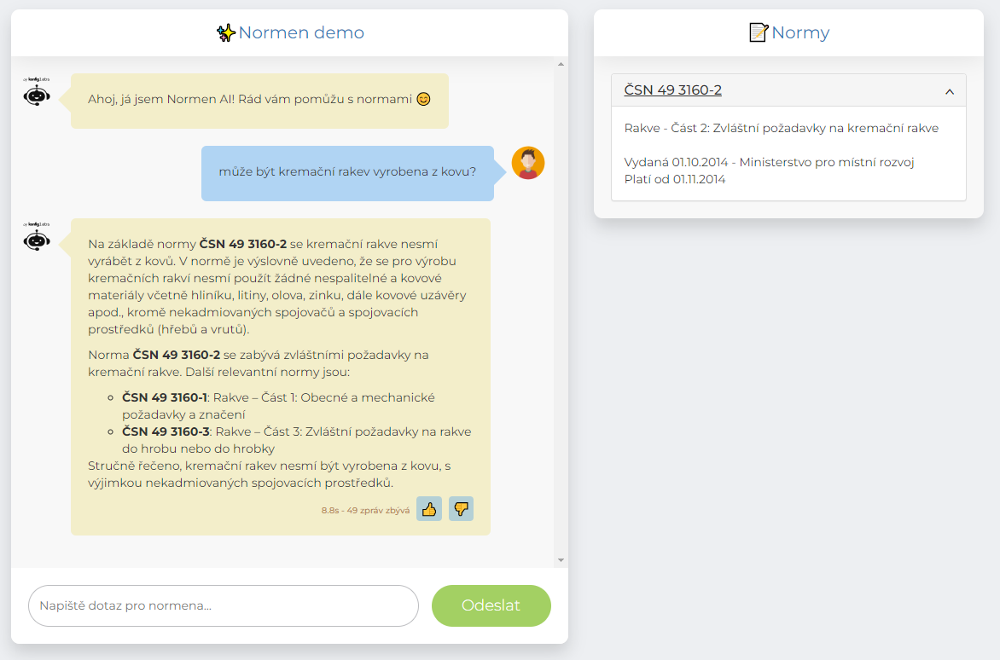
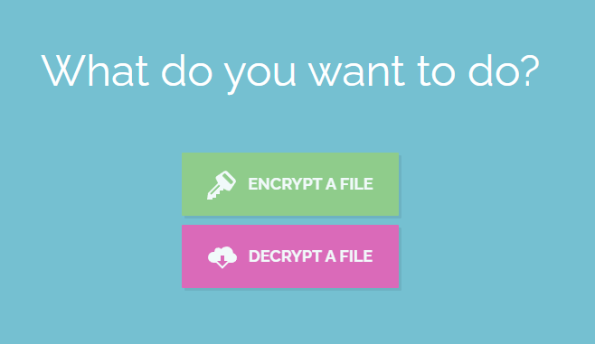
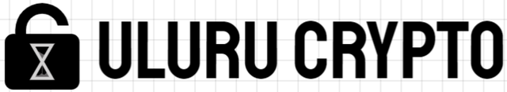
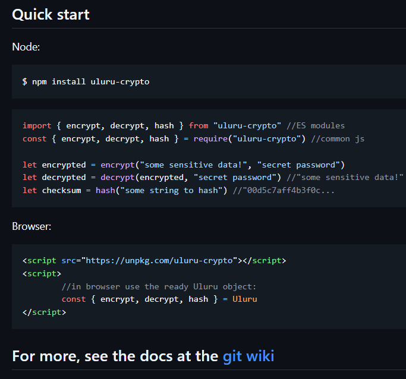
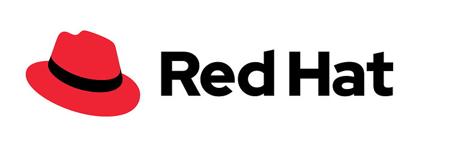
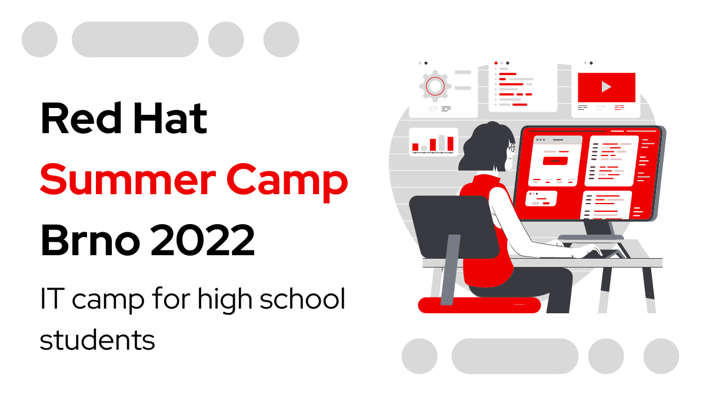
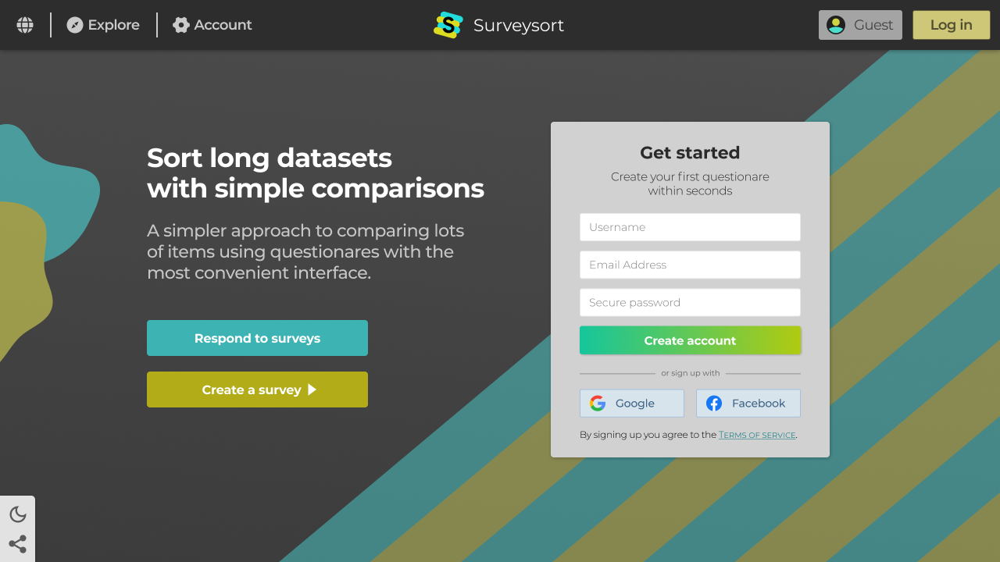

<html lang="cs"></html>
<head>
	<meta charset="UTF-8">
	<meta name="viewport" content="width=device-width, initial-scale=1.0">
	<link rel="shortcut icon" href="img/franatrtur-transparent.png">
	<title>F. Čech - Kontakt</title>
	<link rel="stylesheet" href="css/main.css">
	<link rel="stylesheet" href="css/projekty.css">

	<link rel="preconnect" href="https://fonts.googleapis.com">
	<link rel="preconnect" href="https://fonts.gstatic.com" crossorigin>
	<link href="https://fonts.googleapis.com/css2?family=Inter:ital,opsz,wght@0,14..32,100..900;1,14..32,100..900&display=swap" rel="stylesheet">
	<link rel="stylesheet" href="https://fonts.googleapis.com/css2?family=Material+Symbols+Outlined:opsz,wght,FILL,GRAD@20..48,100..700,0..1,-50..200" />
	<script src="https://ajax.googleapis.com/ajax/libs/jquery/3.7.1/jquery.min.js"></script>
	<base target="_blank">

</head>
<body>

	<header class="row">
		<div id="nav" class="row">
			<a target="_self" href="index.html" id="imglink">
				
			</a>
			<div class="bullet">•</div>
			<a target="_self" onclick="goto(this)" --data-href="projekty.html" class="current">Projekty</a>
			<div class="bullet">•</div>
			<a target="_self" onclick="goto(this)" --data-href="kontakt.html">Kontakt</a>
			<div class="bullet">•</div>
			<a target="_self" onclick="goto(this)" --data-href="skills.html">Skills</a>
			<div class="bullet">•</div>
			<a target="_self" onclick="goto(this)" --data-href="ai.html">Dotazy</a>
		</div>
	</header>


	<div id="content" class="col">

		<h2>Mé projekty a zkušenosti</h2>

		<section class="row animate later">
			<div class="image">
				
				<a href="img/normen-screenshot.png">
					
				</a>
			</div>
			<div class="project col">
				<h1>Software engineer: AI startup MVP</h1>
				<p>
					V létě 2024 jsem po dobu jednoho měsíce vedl tým tří lidí při vývoji MVP projekt AI chatbota <a href="https://proitkurz.pythonanywhere.com/normen-demo">Normen</a>, který umí načítat české technické a stavební normy.
					Pro Brněnský startup <a href="https://konfiglabs.com">Konfiglabs s.r.o.</a> jsem v vyvíjel a stále vyvíjím tento projekt v pythonu a ve flask jsme poté vytvořili backend a frontend pro demonstraci.
					<br><br>
					V rámci projektu jsem se naučil efektivně pracovat s python nástroji pro zpracování dat. Naučil jsem se používat Google <b>Gemini API</b> ale zároveň jsem pochopil, že technika sama o sobě nestačí.
					Bylo nutné propojit technologii s potřebami trhu a našich uživatelů. Navíc jsem se musel rychle přizpůsobovat změnám, iterovat a učit se z neúspěchů, což bylo klíčové pro dosažení úspěchu.
					<br><br>
					Jedním z největších přínosů této zkušenosti pro mě byla schopnost <b>efektivní komunikace mezi engineering a sales týmem.</b>
					Naučil jsem se převádět složité technické koncepty do řeči, které rozumí i netechnicky zaměření kolegové, což vedlo k lepší spolupráci a porozumění.
				</p>
			</div>
		</section>

		<section class="row">
			<div class="image">
				<a href="img/file-encryption.png">
					
				</a>
			</div>
			<div class="project col">
				<h1>Webová aplikace na Šifrování souborů jako Demonstrace mé kryptografické knihovny</h1>
				<p>
					Chcete-li vyzkoušet mou kryptografickou knihovnu naživo, udělal jsem stránku, která demonstruje praktické použití mého open-source kryptografického projektu <b>uluru-crypto</b>. Na této stránce jsem implementoval ukázku šifrování a dešifrování souborů pomocí vlastní implementace algoritmu ChaCha20. Uživatelé mohou nahrát soubor, který je následně <b>zašifrován přímo v prohlížeči pomocí mé knihovny</b>, a poté si mohou stáhnout de/šifrovanou verzi. Tato zkušenost mě nejen naučila, jak lépe integrovat svůj kód do webových aplikací, ale také mi umožnila poskytnout reálnou ukázku využití kryptografie, což posílilo důvěru v můj projekt.
				</p>
				<div class="buttons">
					<a id="cv" class="button row" href="file-encryption">
						
						Vyzkoušet naživo
					</a>
				</div>
			</div>
		</section>

		<section class="row">
			<div class="image">
				
				<a href="img/uluru-usage.png">
					
				</a>
			</div>
			<div class="project col">
				<h1>Open source projekt - kryptografická knihovna</h1>
				<p>
					V rámci svého open-source projekt na GitHubu, <b>uluru-crypto</b> kryptografickou knihovnu v <b>TypeScriptu</b> jsem implementoval několik klíčových kryptografických primitiv, jako jsou symetrická proudová šifra <i>ChaCha20</i>, hash <i>Keccak800</i>, asymetrická šifra <i>RSA</i>, výměna klíčů <i>Diffie-Hellman</i> a další.
					Je to můj největší osobní projekt a věnoval jsem mu spoustu času a energie, vznikl převážně během roku 2022.
					<br><br>
					I když bych vlastní knihovnu bez dostatečného ověření odborníků nepoužíval pro šifrování citlivých dat, tak implementace těchto algoritmů mě naučila nejen hluboké principy, na kterých kryptografie stojí, ale také jak efektivně optimalizovat javascript kód, aby byl <b>bezpečný a výkonný</b> v NodeJS i v prohlížeči.
					Práce na takto velkém projektu mi poskytla prostor pro experimentování a vylepšování, což mi umožnilo lépe pochopit, jak různé kryptografické metody fungují a jak mohou být použity v moderních aplikacích.
					<br><br>
					Osvojil jsem si principy čitelného a okomentovaného kódu, ale především jsem k celé knihovně vytvořil podrobnou dokumentaci na <a href="https://github.com/Franatrtur/ulurujs/wiki">Git wiki</a>.
					I když projekt nemá zatím velkou komunitu, jeho hodnota pro mě spočívá v technickém růstu, který mi přinesl. Navíc jsem hrdý na to, že jsem vytvořil něco, co může být užitečné pro ostatní vývojáře v budoucnosti.
				</p>
				<div class="buttons">
					<a id="cv" class="button row" href="https://github.com/franatrtur/ulurujs">
						
						Kód na githubu
					</a>
				</div>
			</div>
		</section>

		<section class="row">
			<div class="image">
				
				
				<a href="img/surveysort-index.png">
					
				</a>
			</div>
			<div class="project col">
				<h1>Red Hat Summer Camp 2022</h1>
				<p>
					V srpnu 2022 jsem měl možnost se zúčastnit <a href="https://research.redhat.com/red-hat-summer-camp/">Red Hat Summer Campu</a> v Brně, což byla <b><a href="https://research.redhat.com/events/red-hat-summer-camp-brno-2022/">dvoutýdenní akce</a> zaměřená na středoškoláky, kteří se zajímají o IT a software</b>.
					Akce se účastnili lidé s různou úrovní technických znalostí, a společně jsme se učili o moderních technologiích a vývoji aplikací.
					Prostředí v Red Hat bylo inspirativní - každý den jsme měli krátké prezentace o různých aspektech softwarového vývoje, od UX designu po cloudové služby. Právě tato pestrost mi umožnila rozvinout nové technické dovednosti a zároveň pochopit hodnoty otevřeného softwaru.
					<br><br>
					Naše týmová práce vyústila ve vytvoření aplikace s názvem <i>Surveysort</i>, která měla za cíl pomoci firmám snadno třídit a analyzovat data ze zákaznických průzkumů.
					Na projektu jsme pracovali intenzivně po druhý týden - od brainstormingu, přes návrh uživatelského rozhraní, až po samotné programování malého prototypu.
					Vyvrcholením celé akce byla prezentace našeho projektu před skupinou imaginárních investorů (ve skutečnosti zaměstnanců Redhatu).
					S Surveysortem jsme nakonec získali druhé místo, což bylo skvělé ocenění naší práce a týmového úsilí. Vím ale, že jsme mohli dosáhnout prvního místa, když by se některé věci udělali efektivněji a kdybych více podporoval nápady ostatních členů týmu.
					Takže jako zkušenost mi tato akce dala nejen nové technické znalosti, ale především mě naučila, jak důležité je efektivně spolupracovat a společně vytvářet hodnotu.
					<br><br>
					Abych to shrnul, kromě technických výzev jsme se museli naučit <b>efektivně komunikovat a rozdělovat úkoly</b> mezi členy týmu.
					To pro mě byla cenná zkušenost, protože práce v dynamickém týmu se ukázala být stejně důležitá jako technické znalosti.
					
				</p>
			</div>
		</section>

		<footer>
			<h2>Více projektů?</h2>
			<div class="row">
				Mám jich spoustu, některé si můžete prohlédnout na githubu:
				
				<a id="cv" class="button row" href="https://github.com/Franatrtur?tab=repositories">
					
					Franatrtur
				</a>
			</div>
		</footer>

	</div>

	<a target="_blank" href="https://www.youtube.com/watch?v=qdHipyZgOTY" id="swiss">
		Styl: Swiss webdesign
	</a>

	<script src="js/main.js"></script>
	<script src="js/projekty.js"></script>
</body>
</html>